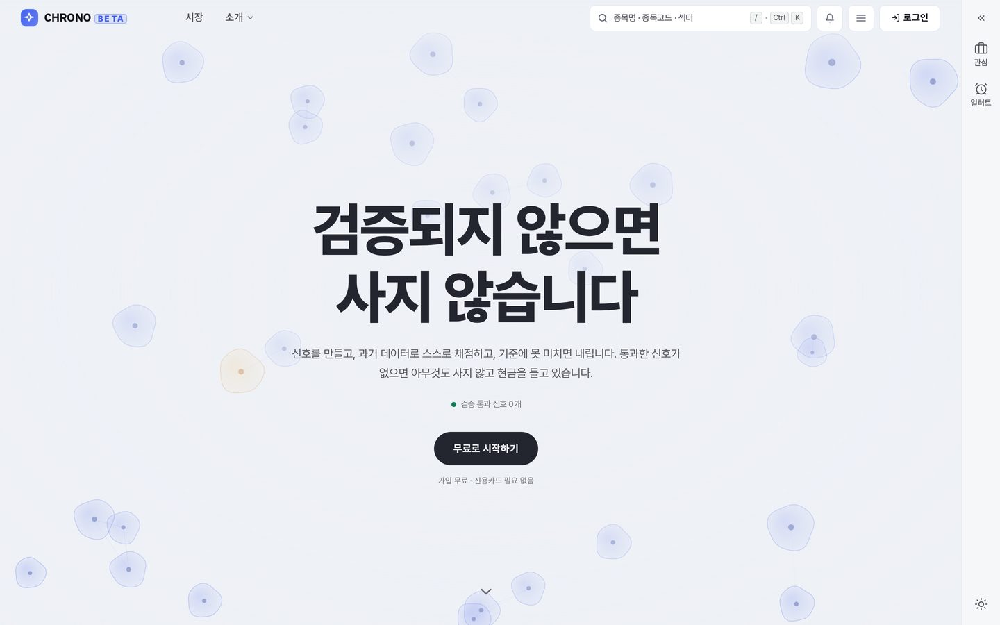

희망 직무는 데이터 파이프라인 구축과 서버·클라우드 운영입니다. 데이터가 들어와서 쌓이고, 모델이 돌고, 화면까지 나가는 구간을 처음부터 끝까지 직접 세워 보는 걸 주로 합니다. 지표가 좋아 보이면 일단 라벨을 섞어서 다시 돌려 봅니다.
구조, 수치, 안 된 것은 각 저장소 README 와 노션에 적어 두었습니다.
개인 투자자용 주식 퀀트 분석 플랫폼입니다. 팀 차트 정복단 졸업작품이고, 팀장 이민성이 데이터 파이프라인, 임창혁이 대시보드·시각화, 제가 클라우드·인프라와 서버 운영을 맡았습니다. 백테스트 숫자는 좋게 나왔지만 누수를 막고 다중비교와 거래비용을 넣어 다시 재니 남는 게 없었습니다. 그래서 좋은 숫자를 앞에 내거는 대신 판정불가를 화면에 그대로 띄웠습니다. 공개 서비스는 2026년 10월 공학제 전시를 끝으로 내렸고, 저장소는 비공개라 요청하시면 공유합니다.

구조 굵은 칸이 제가 맡은 부분입니다.
Oracle Cloud ARM 한 대(Ubuntu 22.04)에 Docker Compose 로 올렸습니다. 수집기는 팀장 이민성, Next.js 화면은 임창혁 담당입니다.
서버 굴리면서 겪은 사고 네 건
1. 크론이 12줄에서 4줄로 잘렸고, 자동복원 장치가 잘린 본을 정본으로 박았습니다. 백업·헬스체크 크론을 되살렸습니다.
2. API 가 73분 멈췄는데 재시작을 맡은 워치독이 이전 사고 때 같이 죽어 있었습니다. 워치독을 5분 주기로 되살렸습니다.
3. 백업이 같은 디스크에만 있었습니다. 암호화 백업을 매일 OCI Object Storage 로 올리고 복호화까지 확인했습니다.
4. 1,000행 배치에서 한 행이 제약에 걸리면 배치 전체가 롤백됐고 Kafka 오프셋은 자동 커밋이라 16일 동안 약 7만 7천 행이 빠졌습니다. 실패 배치는 행 단위로 다시 넣고 오프셋은 적재 뒤 직접 커밋하게 바꿨습니다. 이미 빠진 행은 못 채웠습니다.
금융 보안 로그에서 개인정보를 지우고 위험도를 매기는 파이프라인입니다. n8n 파이프라인과 Express 백엔드를 맡았습니다. 개인정보는 LLM 호출보다 반드시 앞에서 지웁니다. 데이터는 전부 합성이고, 26시간 구동 기록 12,458건을 커밋해 README 숫자를 다시 계산할 수 있게 했습니다.
웹 페이지의 개인정보 노출을 찾는 NER 모델입니다. 정답을 손으로 달면 못 끝낸다고 보고 HyperCLOVA X 에게 라벨링을 맡겨, 수집·라벨링·재학습이 한 바퀴 돌게 했습니다. 알려진 개인정보를 심어 둔 시험 사이트로 모델을 채점합니다.
대구대 경산캠퍼스 지도 위에 공지, 편의시설, 제보, 운동장 예약을 핀으로 모은 웹앱입니다. 1박 2일 동안 요청 92개 중 76개가 고치기였고, 새벽부터는 기능을 멈추고 폰으로 눌러 보며 고쳤습니다.
저장소어디에 썼는지와 같이 적었습니다. 쿠버네티스와 테라폼은 운영해 본 적이 없어서 뺐습니다.
Ubuntu 서버(Oracle Cloud ARM)를 5개월 상시 운영했습니다. Docker Compose 로 서비스를 올리고 Caddy 로 HTTPS 를 붙였습니다. cron 으로 PostgreSQL 을 매일 덤프해 gpg 로 암호화하고 OCI Object Storage 에 올려 복호화까지 확인했습니다. CI 는 GitHub Actions 입니다.
Python(FastAPI) 백엔드, Kafka 를 거쳐 PostgreSQL 에 쌓는 적재 경로(Kafka 서버는 이민성과 같이 맡음), XGBoost·PyTorch 학습 파이프라인과 ONNX 추론, n8n 과 Express 로 만든 로그 처리 파이프라인.
네이버 클라우드 DANCE 1기에서 VPC, 로드밸런서, Cloud DB 이중화를 콘솔로 구성했고 NCA 를 땄습니다.
대구대 산학협력단 부트캠프(2026.07 ~ 2027.01)에서 Java, Spring Boot, JPA, Thymeleaf, Oracle Database, MySQL 을 배우고 있고, 3인 팀 프로젝트를 시작했습니다.
대구대학교 AI·SW 캡스톤디자인 공모전 우수상 (2026, 팀 차트 정복단, CHRONO)
대구대학교 AI·SW Agent 해커톤 경진대회 최우수상 (2025, 팀 AIM)
NCA (Naver Cloud Certified Associate)
대구대학교 네이버 클라우드 DANCE 교육 과정 1기 수료
대구대학교 바이브코딩 해커톤 (2026, du-radar)
업스테이지 MABC 2026 예선 (팀 이문박)
도서관 데이터 활용 공모전 (2025, Edu-Bridge-Library)